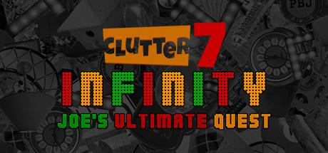
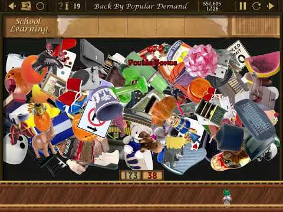

Clutter 7: Infinity - Joe's Ultimate Quest
Publishing Info
- Published by: Libredia GmbH
- Developed by: Puzzles By Joe
- Released: Aug, 2017
- Development Lead: Joe Cassavaugh
Gameplay Photo

Description
Clutter 7 is the seventh game in the Clutter series developed by Puzzles by Joe's developer: Joe Cassavaugh. The game features object matching and organizational mini-puzzles that are randomly generated and highly customizeable. The game features the story of Joe Cassavaugh and how he became known as the "clutter guy". Many fans of the series consider Clutter 7 to be the best in the series (Poll).
Game Categories
- Genre: Puzzle
- Perspective: 1st-person
- Interface: Point and Select
- Players: 1
Quote
Got Junk? Well Joe certainly does, and a whole lot of it! Clutter has returned with something old, something new, something borrowed and something blue. If you've never played Clutter, this game will blow your mind, yea, it's that good, and we Clutter fans can't seem to get enough of this junk.
-- pennmom36 @ https://www.bigfishgames.com/games/12225/clutter-infinity-joes-ultimate-quest/